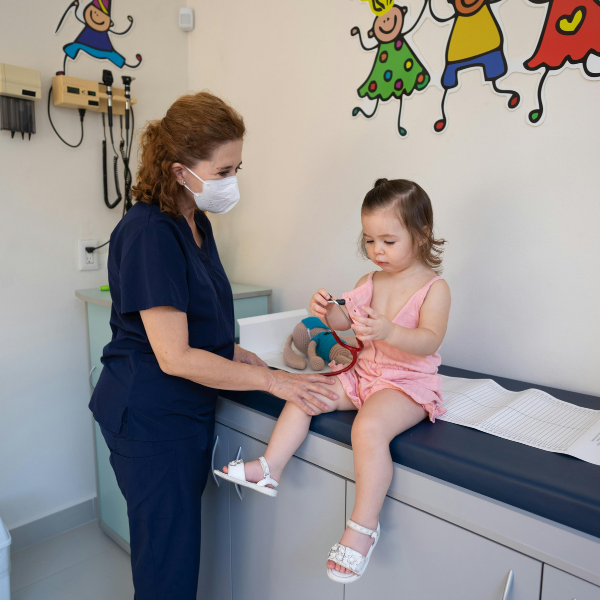
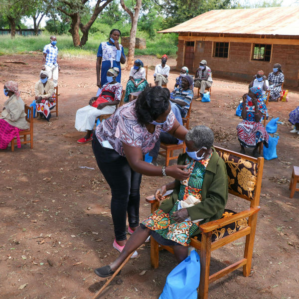

Give your child the best start with a consultation designed just for them. Receive expert guidance, personalized recommendations, and compassionate support every step of the way.
At JVC Nexus Hospital, managing your child’s health is simple. Schedule a video consultation or speak with a pediatrician anytime, 24/7, with minimal waiting. From consultation to payment and even medicine delivery, everything is handled seamlessly in one platform.
After the consultation, you’ll get free e-prescriptions, medical certificates, and lab referrals directly in the app. Plus, our secure digital medical ID lets you safely track and manage your child’s health records anytime.
In keeping with our long-standing commitment to children’s health, we provide free pediatric consultations. This service allows young patients and their parents to receive professional evaluation, discuss health concerns, and obtain expert guidance for ongoing care.

For years, we have prioritized pediatric health by making consultations accessible and reliable. Our dedicated team provides thorough evaluations, personalized advice, and ongoing support to ensure every child receives the care they deserve.

From our earliest days, we have focused on children’s well-being. Our free pediatric consultations provide expert assessment, guidance for parents, and a compassionate approach to every child’s health journey.